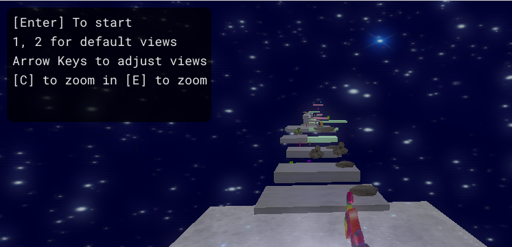
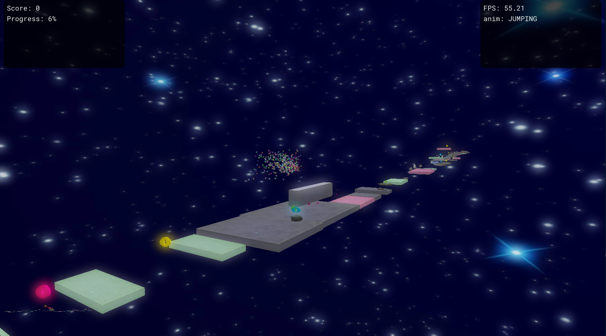
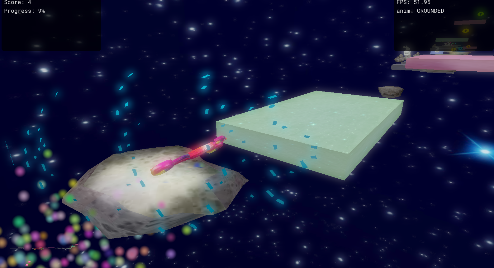
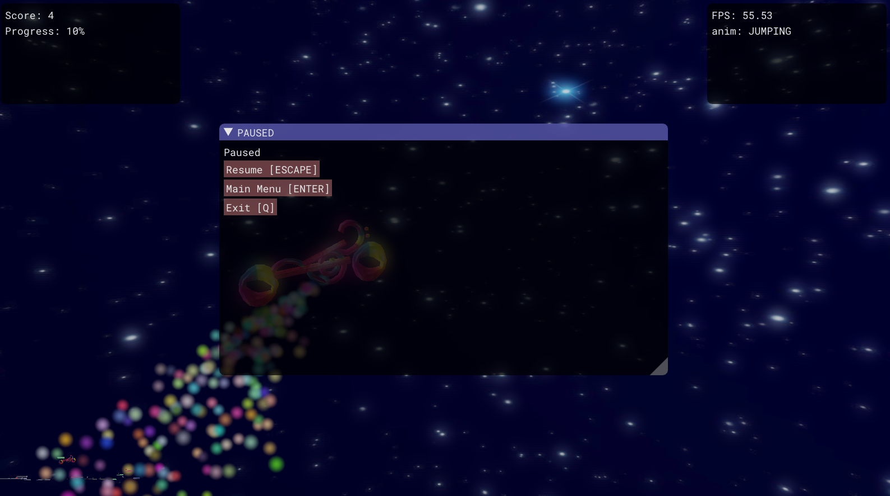

Rhythm Runner
You took candy from a stranger at Burning Man 2020...
Now you must guide your astral bike to safety. Feel the music and let it guide you home. Collect the most notes so you can brag to your family and friends about how you totally ran the rhythm.
Team
Alex Ottoboni, Braden Beck, Matthew Stewart, Alex Nguyen, Joseph Arhar

User Guide
Press the spacebar to jump, press it again to double jump. Use A and D to move left and right to avoid obstacles. Collect the notes for points and the pills for "power ups". Run the Rhythm!
Warning: Play with caution. 3 out of 5 doctors don't recommend running the rhythm to their family.
Screenshots


Video
References
- http://gafferongames.com/game-physics/fix-your-timestep/
- https://www.sfml-dev.org/
- http://aquila-dsp.org/
- https://learnopengl.com/#!Advanced-Lighting/Bloom
- https://open.gl/geometry
- https://learnopengl.com/#!Advanced-OpenGL/Geometry-Shader
- https://www.khronos.org/opengl/wiki/Geometry_Shader
Technologies
- 3D Camera with a controllable view
- Animated main character
- Oct-tree collision detection
- Shadow Mapping
- Hierarchical View Frustum Culling
- Bloom/HDR
- Dreamy Delayed Clear Effect
- Environment Mapping
- Level Creation Tool
- Particle System
- Particle Billboarding
- Particle Alpha Mapping
- Geometry Shader Mesh Fracturing
- Procedurally Generated Level based on music